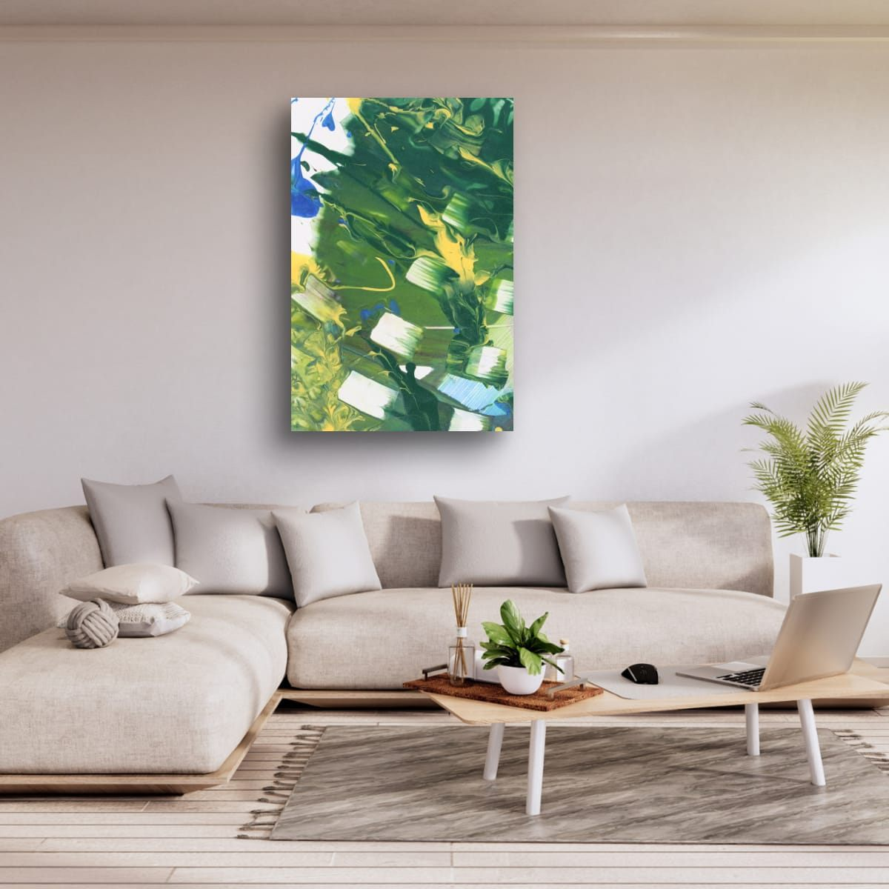

Home / Guides
Wall Art Guides
Choosing art is easy when you love a piece, and much harder when you have to decide where it goes and how big it should be. These guides answer the questions I hear most, with real measurements, simple diagrams and examples you can use in your own home.

I look at walls the way architects and interior designers do: as proportions, sightlines and light. A good piece of art hung at the wrong size or height never quite works. The same piece, sized to the furniture and hung at the right distance, suddenly belongs to the room.
The guides are organized in three groups. Size and placement covers the walls people ask about most, room by room. Color covers how art works with your walls and furniture. And the last group explains the prints themselves: the materials they come in, and what makes painting details different.
Every guide uses the same simple rules that galleries and designers rely on, explained plainly, with diagrams and room examples. They are starting points, not strict laws. Your room, your light and your taste always have the last word.